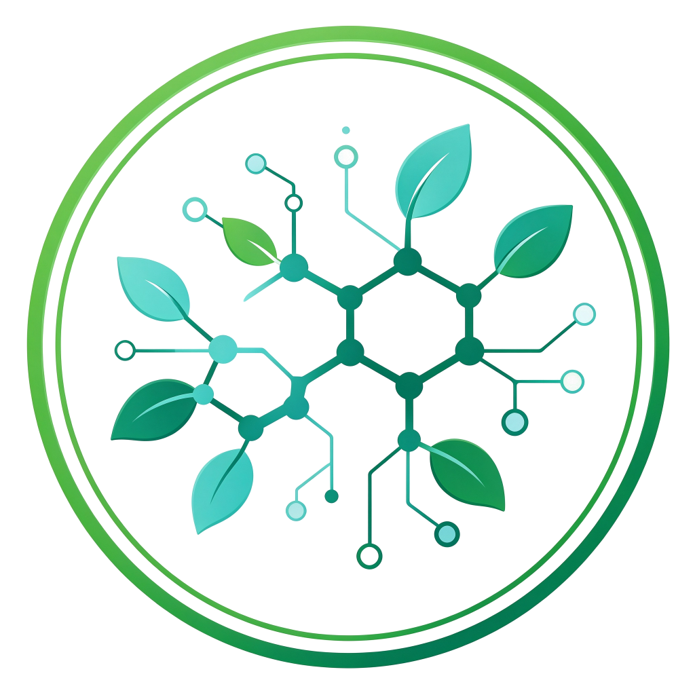
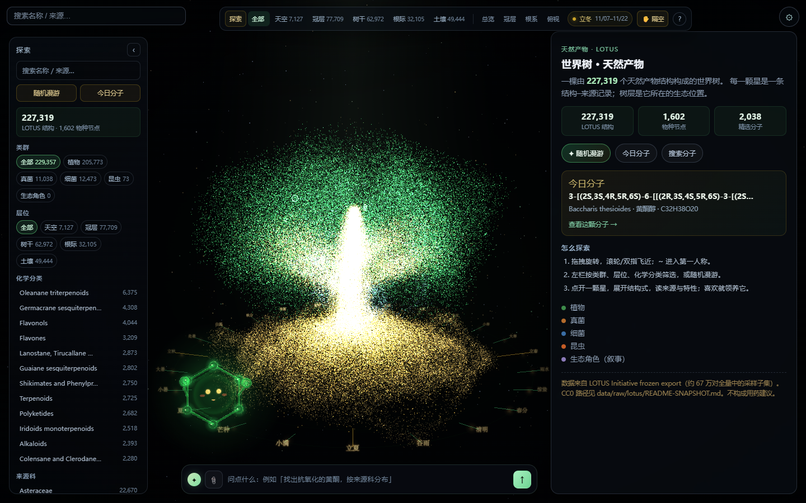
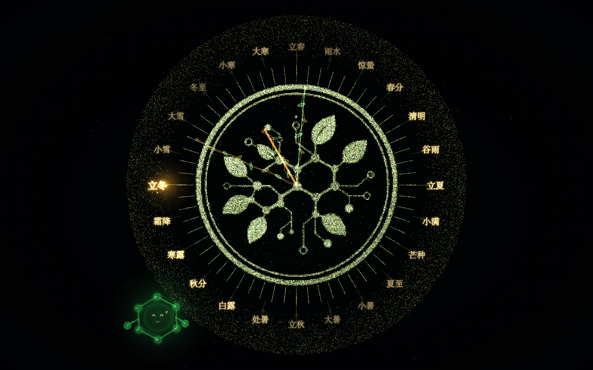
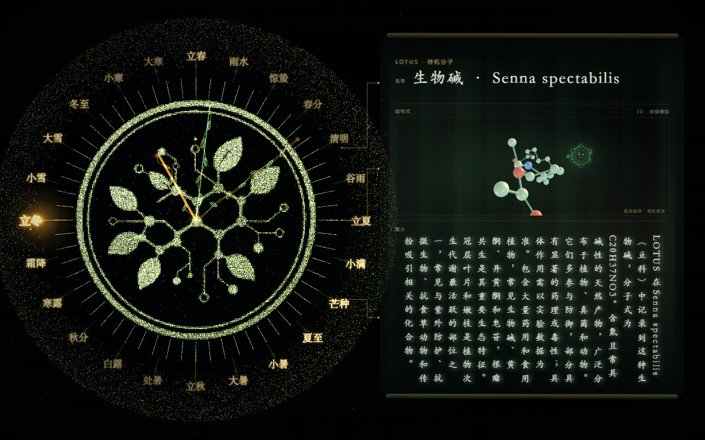

把 227,319 条 LOTUS 天然产物结构种成一棵可以漫游的 WebGL 星点树， 再接入一个能查数据、读论文、识图片、做研究、并把每个数字落到出处的 AI 分析坞。
项目使用 LOTUS Initiative frozen 260413（CC0）的 227,319 条结构记录、1,602 个物种节点和 2,038 个精选分子。 前端使用 Three.js 自定义点云着色器呈现 22.7 万级星点，按 InChIKey 分片加载分子元数据与 3D 构象； 右侧详情卡按需调用 RDKit.js 渲染 2D 结构式，3D 构象由 RDKit ETKDG 离线生成。
./install-offline.sh daemon；默认只公开一个站点端口，领养与 AI 服务只绑定本机。数据边界：LOTUS 不包含实验活性、毒理或临床数据，本作品只做科学传播与教学演示，不提供药效、剂量或安全建议。
| 路径 | 用户看到什么 |
|---|---|
| 进入 | 三个季节加载界面 → 世界树生长 → 小助手介绍左栏、右栏与 AI 分析坞 |
| 探索 | 快速漫游、穿梭星海、连线吸附、今日分子、领养、收藏、下载资料 |
| 查找 | 鱼藤酮/烟碱/印楝素模糊搜索；类群、化学分类、来源科筛选；精选与附近分子 |
| 理解 | 二十四节气钟表、2D 结构式、3D 球棍模型、RDKit 技术栈 |
| 分析 | 论文入库、多模态识图、LOTUS 核对、相似分子对比、快速分析、研究简报 |
项目采用 OpenAI 兼容接口接入对话模型，支持 GLM、DeepSeek、MiMo 等服务商切换；前端通过 SSE 接收流式回答， 服务端负责工具调用、知识库检索、文件解析、图片抽取和会话管理。AI 层不是“把整篇资料塞给模型”， 而是先检索、再调用工具、最后把来源和局限写回回答。
| 测试项 | 结果 | 条件 |
|---|---|---|
| Agent 任务通过 | 18/18（100%） | 真实模型，2026-11-13 |
| 工具选择 | 18/18（100%） | 同上 |
| 来源覆盖 | 18/18（100%） | 同上 |
| RAG Hit@4 | 30/30（100%） | BAAI/bge-m3，14 文档 / 26 片段 |
| RAG MRR | 1.000 | 同上 |
| RAG Cite@4 | 30/30（100%） | 同上 |
| 端到端测试 | 20/20 | mock 模型，不消耗 API |
| 单元测试 | 15/15 | 表格、核对、PDF |
项目不提供药效/剂量建议；知网、万方、Web of Science 只提供检索入口，不抓取受限全文。
公网部署可开启配置锁、管理令牌、设置密码、IP 限流和并发限制，/ai/.env 由站点服务器拦截；
前端不接触真实 API Key。
| 层面 | 关键技术 |
|---|---|
| 三维呈现 | Three.js / WebGL 点云、自定义顶点/片元着色器、Bloom、LOD、按需分片加载；22.7 万级结构点实时渲染。 |
| 数据工程 | LOTUS frozen 260413、InChIKey 分片、634 个元数据分片、631 个 3D 分片、facets 分类索引、Morgan 相似分子索引。 |
| AI Agent | OpenAI 兼容协议、SSE 流式输出、Function Calling、11 个工具、工具轨迹与来源记录、匿名会话。 |
| RAG | BAAI/bge-m3 1024 维向量 + BM25 混合检索；无 Embedding 服务时退化为本地特征哈希 768 维。 |
| 多模态 | 视觉模型结构化 JSON 抽取、置信度阈值、低置信度不自动查库、LOTUS 自动核验。 |
| 分子可视化 | RDKit.js 浏览器内 2D 结构式；RDKit ETKDG 离线生成 3D 构象，缺失时回退 2D。 |
| 工程化 | 零依赖 Node 服务、同源 /api 代理、单公开端口、限流、配置锁、自适应 DPR、H 键隐藏 UI。 |
模型负责理解问题、决定调用哪个工具；真正的数字由服务端从 LOTUS 或用户上传的表格中计算。
例如“资料里说某科有 1000 条，和 LOTUS 一致吗？”会走
verify_claim，返回声称值、实际值、差异百分比和来源；
模型只负责转述结果。这样既保留自然语言交互，又避免把统计交给模型“心算”。



以上图片均来自项目实际运行界面与视觉资产，对应世界树、待机时钟、3D 构象和 LOTUS 新徽标。
本项目为团队课程作品，截至提交日未公开发表，也未获得其他赛事或奖项。
项目使用的 LOTUS 数据为 CC0，Three.js、RDKit.js 等开源依赖按其许可证使用，具体见仓库 NOTICE.md。
本项目为团队原创实现。数据来自 LOTUS Initiative frozen 260413（CC0）； 使用 Three.js、RDKit.js 等开源库，并按照其许可证保留 NOTICE 与依赖说明。 与团队早期“生态挂点 / 星点树”原型相比，主要优化如下：
| 项目 | 地址 / 说明 |
|---|---|
| 源码仓库 | https://github.com/touzhuzri/eco-hotspots |
| 技术文档 | docs/世界之树-技术文档.pdf（18 页） |
| LOTUS | Rutz et al. 2022, eLife 11:e70780；LOTUS frozen 260413（CC0） |
| 开源依赖 | Three.js、RDKit.js；许可证与声明见 NOTICE.md |